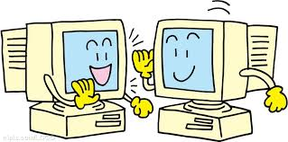

心得
上完了這一學期電腦課，我覺得我在電腦這一方面的知識又增加了不少，
在短短得這一學期裡面，我發現不懂電腦的我，因為老師細心的教導，
讓我對電腦慢慢產生了興趣，也開始學會了架設網站……等，也教導了我們電腦的構造
、硬體的概論、應用的軟體……等，學了這些東西使我們的生活更便利化，在e世代裡面，
電腦等於是我們的必需品，將來出社會這些軟體也會常常用到，
即可以學的時後趕快學，這樣以後才不會跟不上人家的進度。
雖然之後沒有電腦課了，但對於電腦的熱情始終依然不變，
對於有關電腦得知是我也會慢慢去學習，好讓自己多了另一項專長相信，
在上電腦課時，相信我們都變得更成熟，
在短短的一學期當中，真得很感謝老師用心的教導，
才可以讓我們學到那麼多有關於電腦這一方面的知識。

首頁
第2頁
第3頁
第4頁